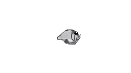
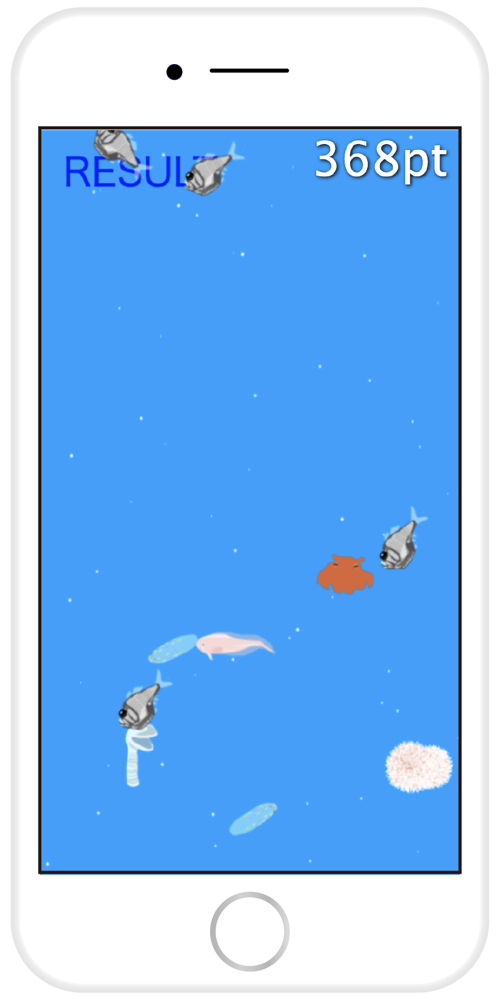
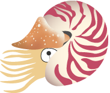
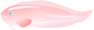

しんかい2020 / DEEP SEA EXPLORATION 2020
ゲーム / UI デザイン課題設定
「得点の概念を入れたゲームを作ろう」
制作期間
5週間 / 2020年
制作形態
授業課題 / 個人制作
使用したソフトウェア
Visual Studio Code (JavaScript) / Illustrator / animateCC
作品説明
しんかい2020は、制限時間30秒で手軽に遊べるスマートフォン用のゲームです。深海生物が大好きだったので、「しんかい2020」という深海2000メートル辺りを潜る、架空の深海探査艇を操作して、深海生物を採取するというゲームを作りました。指一本で遊べる手軽さも考えてゲームのデザインを行いました。ほとんどプログラミングのことがわからなかった中、授業ではcanvasタグ内に描画されるJavaScriptに取り組みました。ライブラリにCreateJSを使用しています。
わくわくスタート画面
トップページにはモーションを加え、深海生物がフワッと登場します。ヘンテコでかわいい深海生物の魅力をギュッと詰め込みました。TOUCH SCREENで画面遷移します。
How to play
真っ暗闇の深海に潜んでいる深海生物に、タップして動かした深海探査艇のライトが当たると深海生物が照らされて浮かび上がります。現れた深海生物をさらにタップすると、深海生物を採取することができます。30秒でどれだけ捕獲できるか!?
遊んでみて快適に感じるように、細かいところまで工夫しています。- 制限時間が残り５秒になったら数字が赤くなる
- 深海生物が画面の端に当たったら進行方向と向きが変わる
- 採取したときのサウンド
- タップしたところまで近づく深海探査艇の向きがチラチラと変わらないように判定
- 深海生物の個体数により点数を変える
- 採取したらその分新しく生成され常に画面に一定数いるテンガンムネエソ 


捕まえた結果
制限時間終了後は深海から浅海へ浮上します。捕獲した深海生物を眺めて楽しみましょう。中にはタップし続けると速く泳ぎ出してしまう、可愛いおさかなもいます。
制作期間後、HTMLとCSSも自分で勉強し、ある程度理解できるようになってから、改めてこのサイトに載せられる形に調整しました。上のスタートボタンから飛べますのでぜひ遊んでみてください。もちろんパソコンでもお試しいただけます。
 